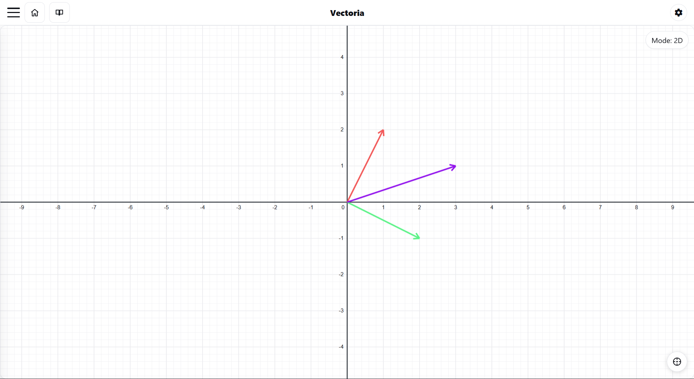
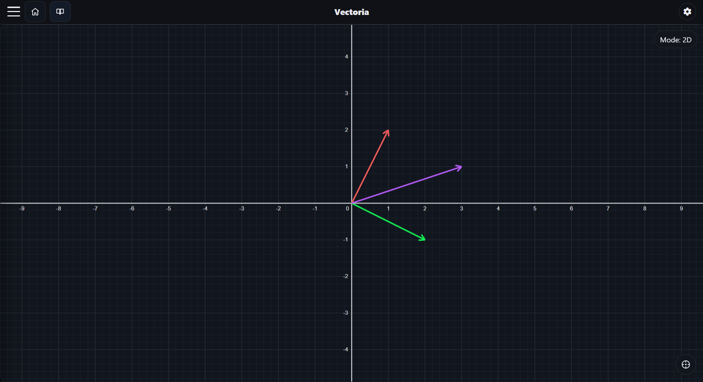

Lý thuyết
Cho \( v_1, v_2, \dots, v_n \) là \( n \) vector (\( n \ge 1 \)) của \( \mathbb{K}- \) không gian vector \( V \) và \( c_1, c_2, \dots, c_n \) là \( n \) vô hướng trong trường \( \mathbb{K} \). Lúc này, vector:
được gọi là tổ hợp tuyến tính (THTT) của hệ vector \( \{v_1, v_2, \dots, v_n\} \).
Khi vector \( v \) là một tổ hợp tuyến tính của hệ \( \{v_1, v_2, \dots, v_n\} \) thì ta bảo \( v \) biểu diễn tuyến tính được qua hệ \( \{v_1, v_2, \dots, v_n\} \).


Hình 1: Ví dụ về tổ hợp tuyến tính
Trong hình 1, vector màu tím \( v = (3, 1) \) là một THTT hay biểu diễn tuyến tính được qua hệ 2 vector màu đỏ \( v_1 = (1, 2) \) và màu xanh lá \( v_2 = (2, -1) \).
Về mặt đại số, \( v \) là THTT của \( \{v_1, v_2\} \) vì:
Ví dụ: Cho tập hợp các vector trong \( \mathcal{M}_2 \):
Khi đó, \( v \) là THTT của \( \{v_1, v_2, v_3\} \) bởi vì:
Cách 1: Biện luận hạng của ma trận
Lập ma trận \( A \) có các cột là các vector \( u_i \) và ma trận mở rộng \( \bar{A} = [A|v] \):
Biến đổi \( \bar{A} \) về dạng bậc thang:
Kết luận: Ta thấy \( \rho(A) = 3 \) và \( \rho(\bar{A}) = 3 \). Vì \( \rho(A) = \rho(\bar{A}) \) nên \( v \) là tổ hợp tuyến tính của hệ \( S \).
Cách 2: Giải hệ phương trình tuyến tính (phương pháp Gauss)
Từ ma trận bậc thang ở cách 1, ta suy ra hệ phương trình:
Vậy \( v \) là một tổ hợp tuyến tính có dạng \( v = -6u_1 + 3u_2 + 2u_3 \).
Cho \( V \) là không gian vector và \( S = \{v_1, v_2 \dots, v_n\} \) là một hệ vector của \( V \), ta nói:
Hệ \( S \) phụ thuộc tuyến tính (PTTT) nếu tồn tại các số thực hay các vô hướng \( c_1, c_2 \dots, c_n \) không đồng thời bằng 0 (tức là có ít nhất một số khác 0) thỏa mãn:
Điều này đồng nghĩa với việc phương trình trên sở hữu ít nhất một nghiệm không tầm thường.
Ngược lại, hệ \( S \) được gọi là hệ vector độc lập tuyến tính (ĐLTT) nếu nó không phụ thuộc tuyến tính. Nói cách khác, hệ \( S \) ĐLTT khi và chỉ khi:
chỉ có nghiệm tầm thường là \( c_1 = c_2 = \dots = c_n = 0 \)
- Hệ chứa vector không luôn PTTT.
- Hệ gồm 1 vector PTTT khi và chỉ khi vector đó bằng 0, hệ gồm 2 vector PTTT khi và chỉ khi 2 vector đó tỷ lệ với nhau.
- Nếu một hệ vector ĐLTT thì mọi hệ con tùy ý của nó cũng ĐLTT.
- Hệ vector \( \{v_1, v_2, \dots, v_n\} \) PTTT khi và chỉ khi tồn tại ít nhất một vector trong hệ có thể biểu diễn tuyến tính qua các vector còn lại của hệ đó.
- Cho hệ vector \( \{v_1, v_2, \dots, v_n\} \) ĐLTT. Khi đó, hệ vector mở rộng \( \{v_1, v_2, \dots, v_n, \mathbf{u}\} \) ĐLTT khi và chỉ khi vector \( \mathbf{u} \) không thể biểu diễn tuyến tính qua hệ \( \{v_1, v_2, \dots, v_n\} \).
Cách 1: Sử dụng định nghĩa (Giải hệ phương trình tuyến tính thuần nhất)
Xét phương trình vector:
\( \Leftrightarrow c_1 \cdot (1, 2, 3) + c_2 \cdot (2, 5, 7) + c_3 \cdot (1, 3, 5) = (0, 0, 0) \)
Hệ phương trình tương ứng:
Giải hệ, ta tìm được nghiệm duy nhất là \( c_1 = c_2 = c_3 = 0 \) (nghiệm tầm thường). Vậy hệ \( S \) ĐLTT.
Cách 2: Biện luận hạng của ma trận
Lập ma trận \( A \) có các cột (hoặc dòng) là các vector của hệ \( S \):
Nhận thấy, ma trận thu được có 3 dòng khác không, vậy \( \rho(A) = 3 = n \) (số vector). Vậy hệ \( S \) ĐLTT.
Cách 3: Sử dụng định thức (Trường hợp số vector bằng số chiều không gian)
Vì \( \det(A) = 1 \neq 0 \), suy ra hệ \( S \) ĐLTT.
Nhận xét: Ma trận \( A \) được sử dụng trong cách 2 và cách 3 chính là ma trận hệ số của hệ phương trình tuyến tính thuần nhất được thiết lập ở cách 1. Tính ĐLTT của hệ \( S \) đồng nghĩa với việc hệ phương trình này chỉ có nghiệm tầm thường, điều này tương đương với việc \( \det(A) \neq 0 \) hoặc có hạng đầy đủ (\( \rho(A) = n \)).
Video trực quan
Bài tập
Xét ma trận mở rộng:
Ta có \( rank(A) = rank(\bar{A}) = 2 \). Suy ra, hệ có nghiệm duy nhất \( (c_1, c_2) = (2, 2) \).
Vậy \( v \) là THTT của \( S \) và \( v = 2v_1 + 2v_2 \).
Bài 1. Xét xem vector \( v \) có phải là một THTT của hệ \( S \) không? Nếu có, hãy tìm một bộ hệ số \( c_i \) thỏa mãn:
- a) \( S = \{(1, 2), (-1, 3)\}, \quad v = (0, 5) \).
- b) \( S = \{(1, 0), (0, 1)\}, \quad v = (3, -4) \).
- c) \( S = \{(1, 1, 1), (1, 0, 1)\}, \quad v = (2, 1, 2) \).
- d) \( S = \{(1, -1, 0), (0, 1, -1)\}, \quad v = (1, 0, -1) \).
- e) \( S = \{(1, 2, 3), (0, 1, 2), (0, 0, 1)\}, \quad v = (1, 4, 9) \).
- f) \( S = \{e_1, e_2, e_3\} \) (với \( e_i \) là cơ sở chính tắc của \( \mathbb{R}^3 \)), \( \quad v = (x, y, z) \).
- g) \( S = \{(1, 2, 1), (2, 1, 3), (1, 1, 1)\}, \quad v = (1, 1, 0) \).
- h) \( S = \{(1, 0, 0), (1, 1, 0), (1, 1, 1)\}, \quad v = (2, 3, 4) \).
- i) \( S = \{(1, 2, 1), (2, 5, 2), (1, 3, 2)\}, \quad v = (1, 1, 1) \).
- j) \( S = \{(1, 1, 0), (1, 0, 1), (0, 1, 1)\}, \quad v = (2, 2, 2) \).
- k) \( S = \{(1, 2, 3), (4, 5, 6)\}, \quad v = (7, 8, 9) \).
Bài 2. Giải thích tại sao các vector \( v \) sau đây không phải (hoặc có tính chất đặc biệt) là THTT của hệ \( S \):
Lập ma trận \( A \) từ các vector theo cột và tính định thức: \( \det(A) = \begin{vmatrix} 1 & 1 & 1 \\ 1 & 2 & 3 \\ 1 & 4 & m \end{vmatrix} \)
Khai triển theo dòng 1:
Để hệ vector phụ thuộc tuyến tính \( \Leftrightarrow \det(A) = 0 \Leftrightarrow m - 7 = 0 \Leftrightarrow m = 7 \)
Vậy \( m = 7 \) thì vector \( u \) là một tổ hợp tuyến tính của \( \{u_1, u_2\} \)
Bài 3. Tìm các giá trị của \( m \) để vector \( u \) là tổ hợp tuyến tính của hệ vector tương ứng:
- a) \( u_1 = (1, 2); \quad u_2 = (2, 4); \quad u = (1, m) \)
- b) \( u_1 = (1, 2, -1); \quad u_2 = (2, 3, 1); \quad u_3 = (3, 5, 0); \quad u = (8, m, 1) \)
- c) \( u_1 = (2, 3, 1); \quad u_2 = (-4, -6, 2); \quad u_3 = (6, 9, 1); \quad u = (1, 2, m) \)
- d) \( u_1 = (1, 2, 4); \quad u_2 = (2, 1, 5); \quad u_3 = (3, -1, 0); \quad u = (m, 3, 1) \)
Bài 4. Trong không gian véctơ ma trận vuông cấp 2, hãy biểu diễn véctơ \( \begin{pmatrix} 11 & 13 \\ 6 & 5 \end{pmatrix} \) theo 4 véctơ \( \begin{pmatrix} 1 & 1 \\ -1 & 2 \end{pmatrix}, \begin{pmatrix} 0 & 1 \\ 2 & 1 \end{pmatrix}, \begin{pmatrix} 2 & 2 \\ 1 & -1 \end{pmatrix}, \begin{pmatrix} 1 & 1 \\ 0 & 1 \end{pmatrix} \)
Cách 1: Sử dụng định nghĩa (Xét hệ phương trình thuần nhất)
Xét phương trình vector:
\( \Leftrightarrow c_1 \cdot (1, 2, 1) + c_2 \cdot (2, 5, 3) + c_3 \cdot (1, 3, 3) = (0, 0, 0) \)
Hệ phương trình tương ứng:
Giải hệ trên, thu được nghiệm duy nhất \( c_1 = c_2 = c_3 = 0 \) (nghiệm tầm thường).
Vậy hệ \( S \) ĐLTT.
Cách 2: Biện luận hạng của ma trận
Lập ma trận \( A \) có các cột là các vector thuộc hệ \( S \) và thực hiện các phép biến đổi sơ cấp:
Nhận thấy \( \rho(A) = 3 = n \) (số vector của hệ). Vậy hệ \( S \) ĐLTT.
Cách 3: Sử dụng định thức (Trường hợp số vector bằng số chiều không gian)
Do hệ \( S \) gồm 3 vector trong không gian \( \mathbb{R}^3 \), ta lập ma trận vuông \( A \) và tính định thức:
Vì \( \det(A) = 1 \neq 0 \), suy ra \( \rho(A) = 3 = \) số vector, do đó hệ vector \( S \) ĐLTT.
Bài 1. Xét tính ĐLTT hoặc PTTT của các hệ vector sau trong không gian tương ứng:
Bài 2. Cho biết các hệ vector sau ĐLTT hay PTTT. Giải thích tại sao?
- a) \( S = \{e_1, e_2, e_3, e_4\} \) trong \( \mathbb{R}^4 \) (\( e_i \) là các vector thuộc cơ sở chính tắc của \( \mathbb{R}^4 \)).
- b) \( S = \{(1, 2), (2, 3), (3, 4)\} \) trong \( \mathbb{R}^2 \).
- c) \( S = \{(1, 0), (0, 1), (1, 1)\} \) trong \( \mathbb{R}^2 \).
- d) \( S = \{(1, 2, 3), \mathbf{0}, (4, 5, 6)\} \) trong \( \mathbb{R}^3 \) (với \( \mathbf{0} \) là vector không).
- e) Cho hai vector \( u, v \) bất kỳ. Xét hệ vector \( S = \{u, v, u + v\} \).
Bài 3. Trong không gian \( \mathcal{P}_2[x] \), xét xem hệ vector \( B = \{u_1 = 1 + 2x, u_2 = 3x - x^2, u_3 = 2 - x + x^2\} \) ĐLTT hay PTTT.
Bài 4.
-
a) Trong không gian véctơ \( \mathbb{R}^4 \), các vector sau là ĐLTT hay PTTT:
\( u_1 = (1, 1, 1, 1), \quad u_2 = (1, 1, -1, -1), \quad u_3 = (1, -1, 1, -1), \quad u_4 = (1, -1, -1, 1) \)
- b) Tìm tất cả các giá trị của \( m \) sao cho véctơ \( u = (m, 1, 2, 3) \) là THTT của bốn vector \( u_1, u_2, u_3, u_4 \)
Bạn đã hoàn thành các bài tập? Tải lời giải về để đối chiếu nhé!
Lời giải tham khảo